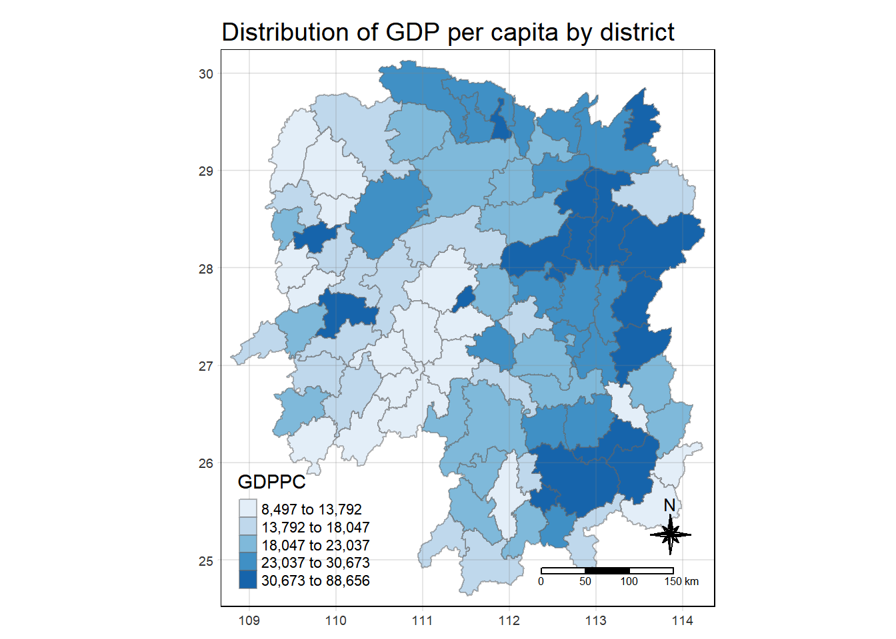
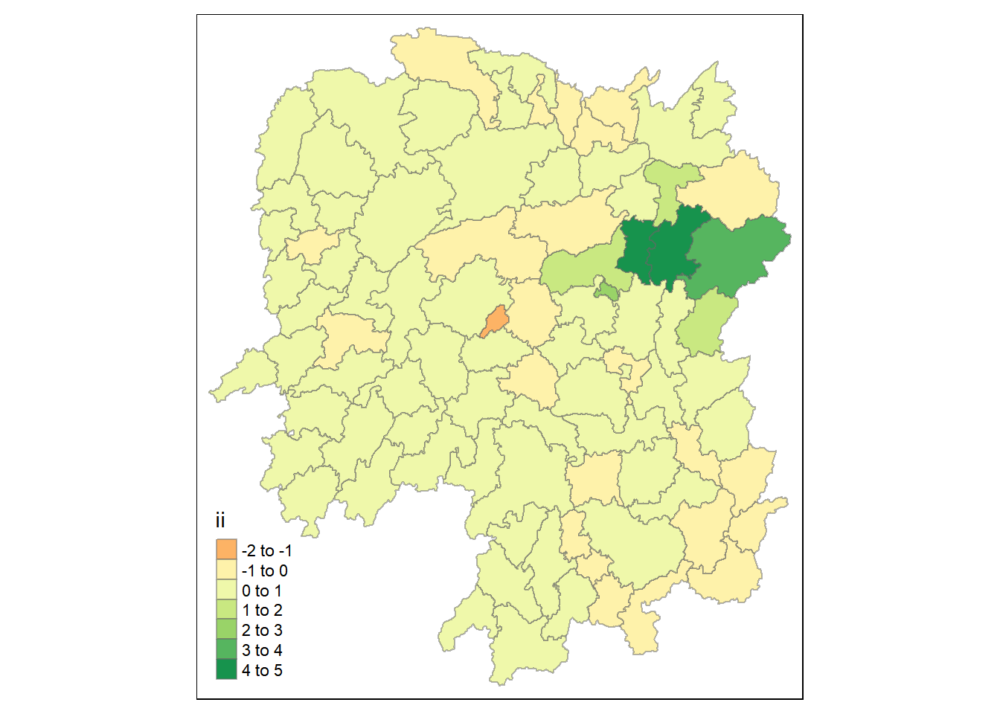
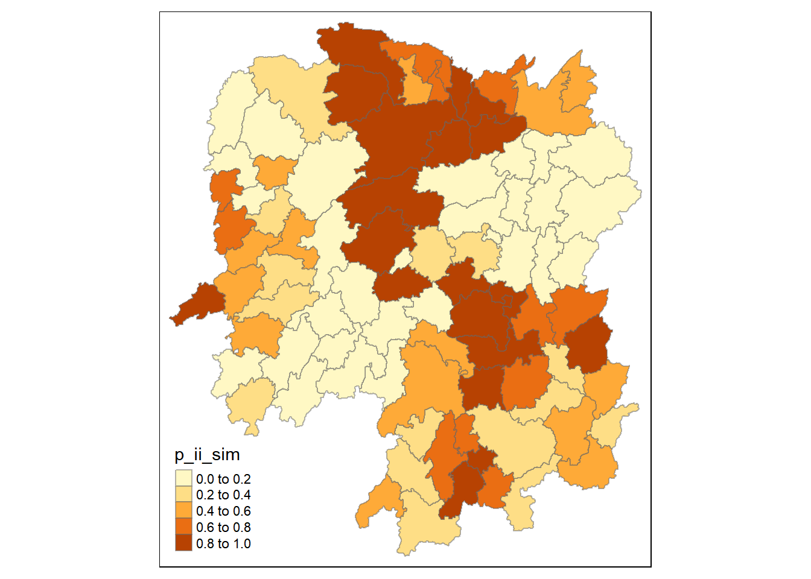
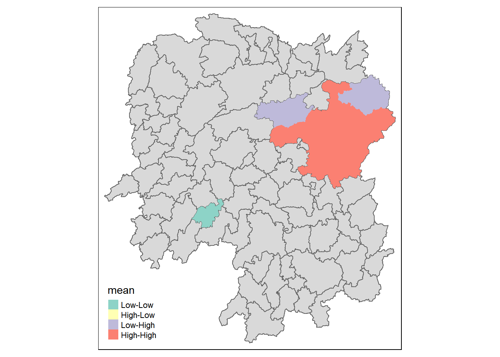
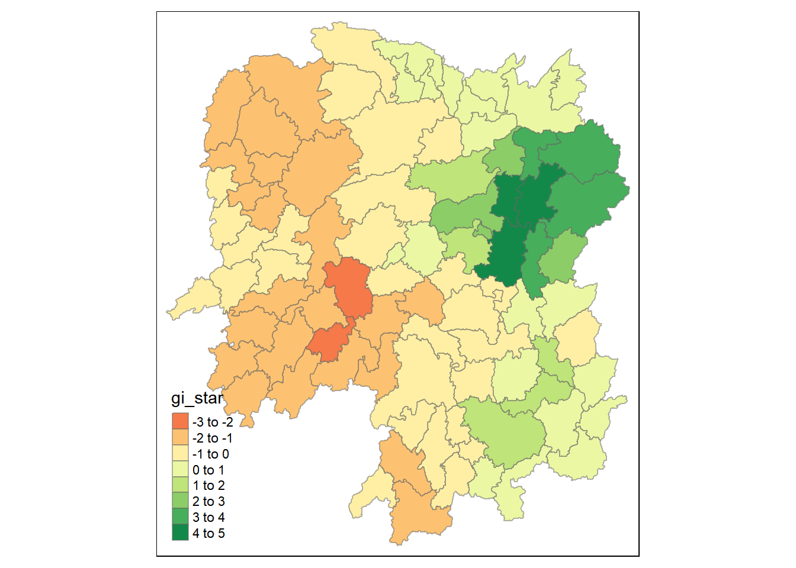
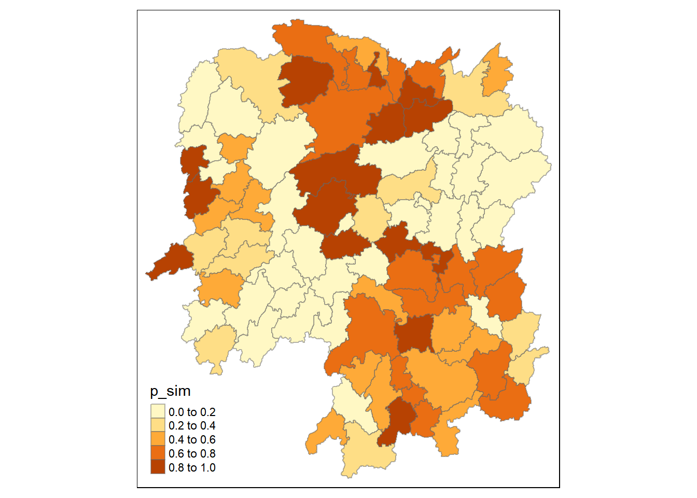

pacman::p_load(tidyverse, tmap, sf, sfdep, plotly)1 Getting Started
1.1 Installing and Loading Packages
Pacman assists us by helping us load R packages that we require, sf, sfdep, tidyverse, plotly and tmap.
Plotly helps to make our charts interactive.
1.2 Data Acquisition
The following datasets are used:
| Dataset Name | Source |
|---|---|
| Hunan (Hunan.shp) | Prof Kam |
| Hunan 2021 (Hunan-2021.csv) | Prof Kam |
2 Spatial Data Wrangling
2.1 Importing Spatial Data
We will use st_read() of sf package to import the three geospatial datasets.
hunan <- st_read(dsn = "In-Class_Ex07/data/geospatial", layer = "hunan")Reading layer `hunan' from data source
`C:\renjie-teo\IS415-GAA\exercises\In-Class_Ex07\data\geospatial'
using driver `ESRI Shapefile'
Simple feature collection with 88 features and 7 fields
Geometry type: POLYGON
Dimension: XY
Bounding box: xmin: 108.7831 ymin: 24.6342 xmax: 114.2544 ymax: 30.12812
Geodetic CRS: WGS 84hunan_2012 <- read_csv("In-Class_Ex07/data/aspatial/Hunan_2012.csv")Rows: 88 Columns: 29
── Column specification ────────────────────────────────────────────────────────
Delimiter: ","
chr (2): County, City
dbl (27): avg_wage, deposite, FAI, Gov_Rev, Gov_Exp, GDP, GDPPC, GIO, Loan, ...
ℹ Use `spec()` to retrieve the full column specification for this data.
ℹ Specify the column types or set `show_col_types = FALSE` to quiet this message.2.2 Combining both data frame by using left join
hunan_GDPPC <- left_join(hunan, hunan_2012) %>%
select(1:4, 7, 15)Joining with `by = join_by(County)`If two columns have the same name, they will automatically be joined, else, the following code has to be specified after the dataframes to be joined. A == B
3 Plotting a Chloropleth Map
tmap_mode("plot")tmap mode set to plottingtm_shape(hunan_GDPPC) +
tm_fill("GDPPC",
style = "quantile",
palette = "Blues",
title = "GDPPC") +
tm_layout(main.title = "Distribution of GDP per capita by district",
main.title.position = "center",
main.title.size = 1.2,
legend.height = 0.45,
legend.width = 0.35,
frame = TRUE) +
tm_borders(alpha = 0.5) +
tm_compass(type="8star", size = 2) +
tm_scale_bar() +
tm_grid(alpha = 0.2)
4 Identify Area Neighbours
Before a spatial weight matrix can be derived, the neighbours need to be identified first.
4.1 Contiguity Neighbours Methods
4.1.1 Queen’s Method
In the code chunk below st_contiguity() is used to derive a contiguity neighbour list by using Queen’s method.
nb_queen <- hunan_GDPPC %>%
mutate(nb = st_contiguity(geometry),
wt = st_weights(nb, style = "W"),
.before = 1)The code chunk below prints the neighbours found using the Queen’s method:
summary(nb_queen) nb wt.Length wt.Class wt.Mode
NULL:2, 3, 4, 57, 85 5 -none- numeric
NULL:1, 57, 58, 78, 85 5 -none- numeric
NULL:1, 4, 5, 85 4 -none- numeric
NULL:1, 3, 5, 6 4 -none- numeric
NULL:3, 4, 6, 85 4 -none- numeric
NULL:4, 5, 69, 75, 85 5 -none- numeric
NULL:67, 71, 74, 84 4 -none- numeric
NULL:9, 46, 47, 56, 78, 80, 86 7 -none- numeric
NULL:8, 66, 68, 78, 84, 86 6 -none- numeric
NULL:16, 17, 19, 20, 22, 70, 72, 73 8 -none- numeric
NULL:14, 17, 72 3 -none- numeric
NULL:13, 60, 61, 63, 83 5 -none- numeric
NULL:12, 15, 60, 83 4 -none- numeric
NULL:11, 15, 17 3 -none- numeric
NULL:13, 14, 17, 83 4 -none- numeric
NULL:10, 17, 22, 72, 83 5 -none- numeric
NULL:10, 11, 14, 15, 16, 72, 83 7 -none- numeric
NULL:20, 22, 23, 77, 83 5 -none- numeric
NULL:10, 20, 21, 73, 74, 86 6 -none- numeric
NULL:10, 18, 19, 21, 22, 23, 82 7 -none- numeric
NULL:19, 20, 35, 82, 86 5 -none- numeric
NULL:10, 16, 18, 20, 83 5 -none- numeric
NULL:18, 20, 38, 41, 77, 79, 82 7 -none- numeric
NULL:25, 28, 31, 32, 54 5 -none- numeric
NULL:24, 28, 31, 33, 81 5 -none- numeric
NULL:27, 33, 42, 81 4 -none- numeric
NULL:26, 29, 42 3 -none- numeric
NULL:24, 25, 33, 49, 54 5 -none- numeric
NULL:27, 37, 42 3 -none- numeric
NULL:33 1 -none- numeric
NULL:24, 25, 32, 36, 39, 40, 56, 81 8 -none- numeric
NULL:24, 31, 50, 54, 55, 56, 75, 85 8 -none- numeric
NULL:25, 26, 28, 30, 81 5 -none- numeric
NULL:36, 45, 80 3 -none- numeric
NULL:21, 41, 47, 80, 82, 86 6 -none- numeric
NULL:31, 34, 40, 45, 56, 80 6 -none- numeric
NULL:29, 42, 43, 44 4 -none- numeric
NULL:23, 44, 77, 79 4 -none- numeric
NULL:31, 40, 42, 43, 81 5 -none- numeric
NULL:31, 36, 39, 43, 45, 79 6 -none- numeric
NULL:23, 35, 45, 79, 80, 82 6 -none- numeric
NULL:26, 27, 29, 37, 39, 43, 81 7 -none- numeric
NULL:37, 39, 40, 42, 44, 79 6 -none- numeric
NULL:37, 38, 43, 79 4 -none- numeric
NULL:34, 36, 40, 41, 79, 80 6 -none- numeric
NULL:8, 47, 86 3 -none- numeric
NULL:8, 35, 46, 80, 86 5 -none- numeric
NULL:50, 51, 52, 53, 55 5 -none- numeric
NULL:28, 51, 52, 54 4 -none- numeric
NULL:32, 48, 52, 54, 55 5 -none- numeric
NULL:48, 49, 52 3 -none- numeric
NULL:48, 49, 50, 51, 54 5 -none- numeric
NULL:48, 55, 75 3 -none- numeric
NULL:24, 28, 32, 49, 50, 52 6 -none- numeric
NULL:32, 48, 50, 53, 75 5 -none- numeric
NULL:8, 31, 32, 36, 78, 80, 85 7 -none- numeric
NULL:1, 2, 58, 64, 76, 85 6 -none- numeric
NULL:2, 57, 68, 76, 78 5 -none- numeric
NULL:60, 61, 87, 88 4 -none- numeric
NULL:12, 13, 59, 61 4 -none- numeric
NULL:12, 59, 60, 62, 63, 77, 87 7 -none- numeric
NULL:61, 77, 87 3 -none- numeric
NULL:12, 61, 77, 83 4 -none- numeric
NULL:57, 76 2 -none- numeric
NULL:76 1 -none- numeric
NULL:9, 67, 68, 76, 84 5 -none- numeric
NULL:7, 66, 76, 84 4 -none- numeric
NULL:9, 58, 66, 76, 78 5 -none- numeric
NULL:6, 75, 85 3 -none- numeric
NULL:10, 72, 73 3 -none- numeric
NULL:7, 73, 74 3 -none- numeric
NULL:10, 11, 16, 17, 70 5 -none- numeric
NULL:10, 19, 70, 71, 74 5 -none- numeric
NULL:7, 19, 71, 73, 84, 86 6 -none- numeric
NULL:6, 32, 53, 55, 69, 85 6 -none- numeric
NULL:57, 58, 64, 65, 66, 67, 68 7 -none- numeric
NULL:18, 23, 38, 61, 62, 63, 83 7 -none- numeric
NULL:2, 8, 9, 56, 58, 68, 85 7 -none- numeric
NULL:23, 38, 40, 41, 43, 44, 45 7 -none- numeric
NULL:8, 34, 35, 36, 41, 45, 47, 56 8 -none- numeric
NULL:25, 26, 31, 33, 39, 42 6 -none- numeric
NULL:20, 21, 23, 35, 41 5 -none- numeric
NULL:12, 13, 15, 16, 17, 18, 22, 63, 77 9 -none- numeric
NULL:7, 9, 66, 67, 74, 86 6 -none- numeric
NULL:1, 2, 3, 5, 6, 32, 56, 57, 69, 75, 78 11 -none- numeric
NULL:8, 9, 19, 21, 35, 46, 47, 74, 84 9 -none- numeric
NULL:59, 61, 62, 88 4 -none- numeric
NULL:59, 87 2 -none- numeric
NAME_2 ID_3 NAME_3 ENGTYPE_3
Length:88 Min. :21098 Length:88 Length:88
Class :character 1st Qu.:21125 Class :character Class :character
Mode :character Median :21150 Mode :character Mode :character
Mean :21150
3rd Qu.:21174
Max. :21201
County GDPPC geometry
Length:88 Min. : 8497 POLYGON :88
Class :character 1st Qu.:14566 epsg:4326 : 0
Mode :character Median :20433 +proj=long...: 0
Mean :24405
3rd Qu.:27224
Max. :88656
5 Computing Contiguity Weights
5.1 Contiguity Weights: Queen’s Method
wm_q <- hunan_GDPPC %>%
mutate(nb = st_contiguity(geometry),
wt = st_weights(nb),
.before = 1)wm_qSimple feature collection with 88 features and 8 fields
Geometry type: POLYGON
Dimension: XY
Bounding box: xmin: 108.7831 ymin: 24.6342 xmax: 114.2544 ymax: 30.12812
Geodetic CRS: WGS 84
First 10 features:
nb
1 2, 3, 4, 57, 85
2 1, 57, 58, 78, 85
3 1, 4, 5, 85
4 1, 3, 5, 6
5 3, 4, 6, 85
6 4, 5, 69, 75, 85
7 67, 71, 74, 84
8 9, 46, 47, 56, 78, 80, 86
9 8, 66, 68, 78, 84, 86
10 16, 17, 19, 20, 22, 70, 72, 73
wt
1 0.2, 0.2, 0.2, 0.2, 0.2
2 0.2, 0.2, 0.2, 0.2, 0.2
3 0.25, 0.25, 0.25, 0.25
4 0.25, 0.25, 0.25, 0.25
5 0.25, 0.25, 0.25, 0.25
6 0.2, 0.2, 0.2, 0.2, 0.2
7 0.25, 0.25, 0.25, 0.25
8 0.1428571, 0.1428571, 0.1428571, 0.1428571, 0.1428571, 0.1428571, 0.1428571
9 0.1666667, 0.1666667, 0.1666667, 0.1666667, 0.1666667, 0.1666667
10 0.125, 0.125, 0.125, 0.125, 0.125, 0.125, 0.125, 0.125
NAME_2 ID_3 NAME_3 ENGTYPE_3 County GDPPC
1 Changde 21098 Anxiang County Anxiang 23667
2 Changde 21100 Hanshou County Hanshou 20981
3 Changde 21101 Jinshi County City Jinshi 34592
4 Changde 21102 Li County Li 24473
5 Changde 21103 Linli County Linli 25554
6 Changde 21104 Shimen County Shimen 27137
7 Changsha 21109 Liuyang County City Liuyang 63118
8 Changsha 21110 Ningxiang County Ningxiang 62202
9 Changsha 21111 Wangcheng County Wangcheng 70666
10 Chenzhou 21112 Anren County Anren 12761
geometry
1 POLYGON ((112.0625 29.75523...
2 POLYGON ((112.2288 29.11684...
3 POLYGON ((111.8927 29.6013,...
4 POLYGON ((111.3731 29.94649...
5 POLYGON ((111.6324 29.76288...
6 POLYGON ((110.8825 30.11675...
7 POLYGON ((113.9905 28.5682,...
8 POLYGON ((112.7181 28.38299...
9 POLYGON ((112.7914 28.52688...
10 POLYGON ((113.1757 26.82734...5.2 Contiguity Weights: Rook’s Method
wm_r <- hunan_GDPPC %>%
mutate(nb = st_contiguity(geometry, queen = FALSE),
wt = st_weights(nb),
.before = 1)wm_rSimple feature collection with 88 features and 8 fields
Geometry type: POLYGON
Dimension: XY
Bounding box: xmin: 108.7831 ymin: 24.6342 xmax: 114.2544 ymax: 30.12812
Geodetic CRS: WGS 84
First 10 features:
nb
1 3, 4, 57, 85
2 57, 58, 78, 85
3 1, 4, 5, 85
4 1, 3, 5, 6
5 3, 4, 6, 85
6 4, 5, 69, 75, 85
7 67, 71, 74, 84
8 9, 46, 47, 56, 78, 80, 86
9 8, 66, 68, 78, 84, 86
10 16, 19, 20, 22, 70, 72, 73
wt
1 0.25, 0.25, 0.25, 0.25
2 0.25, 0.25, 0.25, 0.25
3 0.25, 0.25, 0.25, 0.25
4 0.25, 0.25, 0.25, 0.25
5 0.25, 0.25, 0.25, 0.25
6 0.2, 0.2, 0.2, 0.2, 0.2
7 0.25, 0.25, 0.25, 0.25
8 0.1428571, 0.1428571, 0.1428571, 0.1428571, 0.1428571, 0.1428571, 0.1428571
9 0.1666667, 0.1666667, 0.1666667, 0.1666667, 0.1666667, 0.1666667
10 0.1428571, 0.1428571, 0.1428571, 0.1428571, 0.1428571, 0.1428571, 0.1428571
NAME_2 ID_3 NAME_3 ENGTYPE_3 County GDPPC
1 Changde 21098 Anxiang County Anxiang 23667
2 Changde 21100 Hanshou County Hanshou 20981
3 Changde 21101 Jinshi County City Jinshi 34592
4 Changde 21102 Li County Li 24473
5 Changde 21103 Linli County Linli 25554
6 Changde 21104 Shimen County Shimen 27137
7 Changsha 21109 Liuyang County City Liuyang 63118
8 Changsha 21110 Ningxiang County Ningxiang 62202
9 Changsha 21111 Wangcheng County Wangcheng 70666
10 Chenzhou 21112 Anren County Anren 12761
geometry
1 POLYGON ((112.0625 29.75523...
2 POLYGON ((112.2288 29.11684...
3 POLYGON ((111.8927 29.6013,...
4 POLYGON ((111.3731 29.94649...
5 POLYGON ((111.6324 29.76288...
6 POLYGON ((110.8825 30.11675...
7 POLYGON ((113.9905 28.5682,...
8 POLYGON ((112.7181 28.38299...
9 POLYGON ((112.7914 28.52688...
10 POLYGON ((113.1757 26.82734...6 Global Moran I
6.1 Performing Global Moran’s I Test
moranI <- global_moran(wm_q$GDPPC,
wm_q$nb,
wm_q$wt)
Note
Typically global_moran test is not run, we can just run the global_moran_test as shown below
Performing Global Moran I Test
global_moran_test(wm_q$GDPPC,
wm_q$nb,
wm_q$wt)
Moran I test under randomisation
data: x
weights: listw
Moran I statistic standard deviate = 4.7351, p-value = 1.095e-06
alternative hypothesis: greater
sample estimates:
Moran I statistic Expectation Variance
0.300749970 -0.011494253 0.004348351 Since p-value < 0.05, we reject the null hypothesis. We observe clustering at the Moran I statistic is > 0.
6.2 Performing Global Moran I Permutation Test
In Global Moran I test, it is called permutation test, but in other cases, it might be called Monte Carlo Simulation.
In the code below, we set a particular seed to ensure our results are reproducible.
If we run nsim = 99 we are actually running 100 simulations, the more simulations, especially if observations are small, the more stable the results.
set.seed(1234)
global_moran_perm(wm_q$GDPPC,
wm_q$nb,
wm_q$wt,
nsim = 99)
Monte-Carlo simulation of Moran I
data: x
weights: listw
number of simulations + 1: 100
statistic = 0.30075, observed rank = 100, p-value < 2.2e-16
alternative hypothesis: two.sided7 Local Moran I
7.1 Computing Local Moran’s I
lisa <- wm_q %>%
mutate(local_moran = local_moran(
GDPPC, nb, wt, nsim = 99),
.before = 1) %>%
unnest(local_moran)
lisaSimple feature collection with 88 features and 20 fields
Geometry type: POLYGON
Dimension: XY
Bounding box: xmin: 108.7831 ymin: 24.6342 xmax: 114.2544 ymax: 30.12812
Geodetic CRS: WGS 84
# A tibble: 88 × 21
ii eii var_ii z_ii p_ii p_ii_sim p_folded_sim skewness
<dbl> <dbl> <dbl> <dbl> <dbl> <dbl> <dbl> <dbl>
1 -0.00147 0.00177 0.000418 -0.158 0.874 0.82 0.41 -0.812
2 0.0259 0.00641 0.0105 0.190 0.849 0.96 0.48 -1.09
3 -0.0120 -0.0374 0.102 0.0796 0.937 0.76 0.38 0.824
4 0.00102 -0.0000349 0.00000437 0.506 0.613 0.64 0.32 1.04
5 0.0148 -0.00340 0.00165 0.449 0.654 0.5 0.25 1.64
6 -0.0388 -0.00339 0.00545 -0.480 0.631 0.82 0.41 0.614
7 3.37 -0.198 1.41 3.00 0.00266 0.08 0.04 1.46
8 1.56 -0.265 0.804 2.04 0.0417 0.08 0.04 0.459
9 4.42 0.0450 1.79 3.27 0.00108 0.02 0.01 0.746
10 -0.399 -0.0505 0.0859 -1.19 0.234 0.28 0.14 -0.685
# ℹ 78 more rows
# ℹ 13 more variables: kurtosis <dbl>, mean <fct>, median <fct>, pysal <fct>,
# nb <nb>, wt <list>, NAME_2 <chr>, ID_3 <int>, NAME_3 <chr>,
# ENGTYPE_3 <chr>, County <chr>, GDPPC <dbl>, geometry <POLYGON [°]>
Note
unnest is necessary to be able to plot the data. unnest is to unnest the values from a list to be able to plot it on tmap
In general, for lisa var, the mean or pysal should be the same, we can use either to plot the graph. In general, we do not need to use median unless we are concerned about non-normality assumptions.
7.2 Visualising Local Moran’s I
tmap_mode("plot")tmap mode set to plottingtm_shape(lisa) +
tm_fill("ii") +
tm_borders(alpha = 0.5) +
tm_view(set.zoom.limits = c(6,8))Variable(s) "ii" contains positive and negative values, so midpoint is set to 0. Set midpoint = NA to show the full spectrum of the color palette.
tmap_mode("plot")tmap mode set to plottingtm_shape(lisa) +
tm_fill("p_ii_sim") +
tm_borders(alpha = 0.5) +
tm_view(set.zoom.limits = c(6,8))
We avoid using p_ii under lisa as it was not run over several simulations, we would prefer to use p_ii_sim instead.
lisa_sig <- lisa %>% filter(p_ii < 0.05) # to modify code to plot non-significant values as a class itself also
tmap_mode("plot")tmap mode set to plottingtm_shape(lisa) +
tm_polygons() +
tm_borders(alpha = 0.5) +
tm_shape(lisa_sig) +
tm_fill("mean") +
tm_view(set.zoom.limits = c(6,8))Warning: One tm layer group has duplicated layer types, which are omitted. To
draw multiple layers of the same type, use multiple layer groups (i.e. specify
tm_shape prior to each of them).
8 Hot Spot and Cold Spot Area Analysis
HCSA <- wm_q %>%
mutate(local_Gi = local_gstar_perm(
GDPPC, nb, wt, nsim = 99),
.before = 1) %>%
unnest(local_Gi)
HCSASimple feature collection with 88 features and 18 fields
Geometry type: POLYGON
Dimension: XY
Bounding box: xmin: 108.7831 ymin: 24.6342 xmax: 114.2544 ymax: 30.12812
Geodetic CRS: WGS 84
# A tibble: 88 × 19
gi_star cluster e_gi var_gi std_dev p_value p_sim p_folded_sim skewness
<dbl> <fct> <dbl> <dbl> <dbl> <dbl> <dbl> <dbl> <dbl>
1 0.0416 Low 0.0114 0.00000641 0.0493 9.61e-1 0.7 0.35 0.875
2 -0.333 Low 0.0106 0.00000384 -0.0941 9.25e-1 1 0.5 0.661
3 0.281 High 0.0126 0.00000751 -0.151 8.80e-1 0.9 0.45 0.640
4 0.411 High 0.0118 0.00000922 0.264 7.92e-1 0.6 0.3 0.853
5 0.387 High 0.0115 0.00000956 0.339 7.34e-1 0.62 0.31 1.07
6 -0.368 High 0.0118 0.00000591 -0.583 5.60e-1 0.72 0.36 0.594
7 3.56 High 0.0151 0.00000731 2.61 9.01e-3 0.06 0.03 1.09
8 2.52 High 0.0136 0.00000614 1.49 1.35e-1 0.2 0.1 1.12
9 4.56 High 0.0144 0.00000584 3.53 4.17e-4 0.04 0.02 1.23
10 1.16 Low 0.0104 0.00000370 1.82 6.86e-2 0.12 0.06 0.416
# ℹ 78 more rows
# ℹ 10 more variables: kurtosis <dbl>, nb <nb>, wt <list>, NAME_2 <chr>,
# ID_3 <int>, NAME_3 <chr>, ENGTYPE_3 <chr>, County <chr>, GDPPC <dbl>,
# geometry <POLYGON [°]>tmap_mode("plot")tmap mode set to plottingtm_shape(HCSA) +
tm_fill("gi_star") +
tm_borders(alpha = 0.5) +
tm_view(set.zoom.limits = c(6,8))Variable(s) "gi_star" contains positive and negative values, so midpoint is set to 0. Set midpoint = NA to show the full spectrum of the color palette.
8.1 Visualising p-value of HCSA
tmap_mode("plot")tmap mode set to plottingtm_shape(HCSA) +
tm_fill("p_sim") +
tm_borders(alpha = 0.5) +
tm_view(set.zoom.limits = c(6,8))
9 Emerging Hotspot Analysis
Let us import the GDPPC data between 2005 to 2022 into R.
GDPPC <- read_csv("In-Class_Ex07/data/aspatial/Hunan_GDPPC.csv")Rows: 1496 Columns: 3
── Column specification ────────────────────────────────────────────────────────
Delimiter: ","
chr (1): County
dbl (2): Year, GDPPC
ℹ Use `spec()` to retrieve the full column specification for this data.
ℹ Specify the column types or set `show_col_types = FALSE` to quiet this message.We will use spacetime() to combine the attributes with the geospatial data to create a spatio-temporal cube.
GDPPC_st <- spacetime(GDPPC, hunan,
.loc_col = "County",
.time_col = "Year")GDPPC_nb <- GDPPC_st %>%
activate("geometry") %>% #using geometry
mutate(
nb = include_self(st_contiguity(geometry)), #calculate neighbours
wt = st_weights(nb)
) %>%
set_nbs("nb") %>% #create column for nb and wt in space time table
set_wts("wt")ehsa <- emerging_hotspot_analysis(
x = GDPPC_st,
.var = "GDPPC",
k = 1,
nsim = 99
)ehsa# A tibble: 88 × 4
location tau p_value classification
<chr> <dbl> <dbl> <chr>
1 Anxiang 0.221 0.232 sporadic coldspot
2 Hanshou 0.147 0.434 sporadic hotspot
3 Jinshi 0.441 0.0151 oscilating hotspot
4 Li -0.824 0.00000482 sporadic coldspot
5 Linli 0.118 0.537 oscilating hotspot
6 Shimen -0.471 0.00946 oscilating coldspot
7 Liuyang 0.868 0.00000143 sporadic hotspot
8 Ningxiang -0.559 0.00201 sporadic coldspot
9 Wangcheng -0.162 0.387 sporadic coldspot
10 Anren 0.456 0.0120 sporadic coldspot
# ℹ 78 more rows